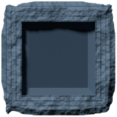
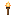
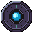

Stone first, timber as accent
ui_art.py --oak, ui/oak/)The three timber accents, and nothing else in oak
Iron and brass stay as small fittings (studs, brackets, bands, the towns' studs); the rune stays the one glow (focus and selection).
Q1: drawn or rendered? (still open)
docs/screenshots/mockup-ui/q1-drawn-vs-rendered.png.
Materials and tokens
Every colour is a Sweaft-64 entry (the kit's save() refuses anything else). They replace menu.rs's INK / MINT / PANEL_FILL / EDGE and the copies of them in pack.rs and loading.rs. Labels on stone are inlaid chalk (LABEL); letters on the light compass stone are cut dark (CUT); only the lintel's title is cut into oak (OAK_LABEL).
Type
Display: Pixelify Sans (carved titles and plaque labels, upper case). Body: VT323 (counts, lines of talk, settings). Both on Google Fonts under the OFL; the game would ship the two TTFs in assets/fonts/. Sizes are whole multiples of the UI scale.
Ore for the gate hinges. Bring six iron and I will see the gate hung by nightfall.
Secondary text, and counts: 64 16 3
Panels at three sizes (9-slice)
The rough-rock slab frames every menu; its sides repeat every 20 px. The dressed-stone moulding frames drawers and sub-panels: mitres, quoin joints and iron brackets sit in its 14 px corners, its sides carry only lines that run along them. The lintel stretches along its grain. Centres are one flat colour.
Buttons
A raised stone plaque, 22 px tall (44 at 2x), its label inlaid in chalk. Hover lifts it to a lighter stone and the iron studs to brass; pressed sinks it a pixel and turns its light round; disabled is dead dark stone with no light and no studs; focus cuts a rune round it. Try them.
Slots and item frames
Rarity frames are offered for the mockups' loot (the game has no rarity yet): gems in the block's corners and a coloured rim. The well is 16 x 16, the game's icon size, so an icon sits pixel for pixel.
Tabs, scrollbar, slider, checkboxes, tooltip

Bars, compass, map frame, portrait, emblem, icons


The HUD in play, by day and by night
Real game shots (compass-bar/compass-noon-north.png, cities-in-the-world/game-4a-dunmouth-above-night.jpg). Before: today's translucent teal squares and text strip. After: the same three controls in stone (the compass pointer the one bit of oak), nothing else. The UI is unlit: it reads the same over noon sand and over a dark town, because every piece carries its own dark outline and an opaque face.
The pack
Thirty slots and the hotbar under them (inventory-grid). A click picks a stack up, a second click puts it down; try it. The title is carved; the hint line is gone (the controls are in Settings, Input).
The world map
The map is the game's render; around it a dressed-stone moulding with rough-rock corner blocks. The overlay list, today a text panel open over the top left, becomes a drawer of stone toggles in the dressed-stone sub-panel frame, shut by default (shown open here, over the same corner).
A crafting station, and the hearth
The station panels of the crafting (M3) and cooking (M27) mockups in the kit: a recipe list that scrolls, inputs, fuel, a progress bar, the output. Icons are the game's (tools, lights, fish, block tiles); recipes shown are illustrative. No before: the game has no station screen yet.
Talk and trade
The townsfolk mockup's (M5) conversation and the market's (M12) barter, at night in Dunmouth: the box sits low and leaves the street visible. The portraits are the npcs mockup's art.
The loading screen
From the first frame (CLAUDE.md, "A loading screen on boot"): the emblem cut in a rock slab, the name carved, the step, and a rune bar that fills as the world is prepared and the shaders warm.